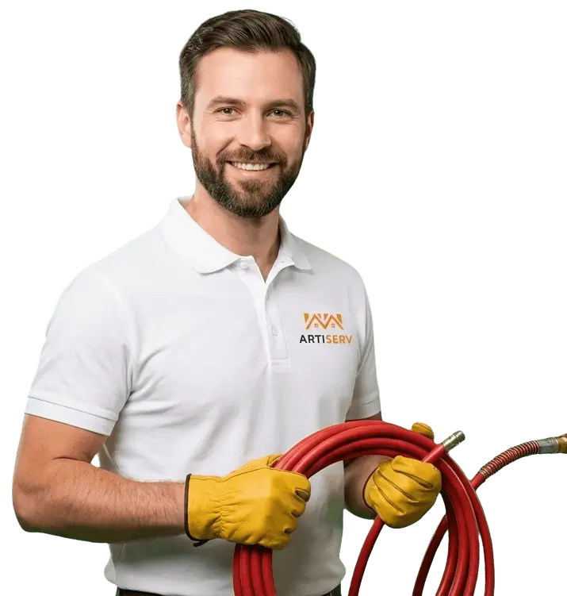

Expert en curage et hydrocurage haute pression à Vitry-sur-Seine et dans le Val-de-Marne. Nettoyage professionnel des canalisations, détartrage, dégraissage, élimination des racines. Camion hydrocureur jusqu'à 200 bars. Intervention rapide 24h/24.

ARTISERV Débouchage intervient à Vitry-sur-Seine et dans le Val-de-Marne pour le curage et l'hydrocurage professionnel de vos canalisations. Notre camion hydrocureur haute pression (jusqu'à 200 bars) élimine efficacement graisses, calcaire, tartre, racines et tous dépôts accumulés dans vos réseaux d'évacuation.
Le curage haute pression permet un nettoyage complet et durable de vos canalisations. Contrairement au simple débouchage, l'hydrocurage nettoie intégralement les parois internes, élimine les dépôts les plus tenaces et prévient les futurs engorgements. Cette technique est particulièrement recommandée pour les canalisations très encrassées, les réseaux anciens, les installations professionnelles (restaurants, copropriétés, industries) et l'entretien préventif.
Zone d'intervention : Vitry-sur-Seine, les communes environnantes et toutes les communes du Val-de-Marne. Intervention d'urgence en moins de 30 minutes avec camion hydrocureur professionnel.
Hydrocurage haute pression des colonnes d'eaux usées, réseaux collectifs, canalisations d'immeubles. Élimination complète graisses, tartre, calcaire. Nettoyage intégral des parois.
Curage canalisations enterrées, réseaux eaux pluviales, regards d'évacuation. Élimination racines, boues, sédiments. Camion hydrocureur adapté aux longs réseaux extérieurs.
Dégraissage intensif des réseaux de restaurants, cantines, boucheries. Bacs à graisse, siphons sols, évacuations cuisine. Entretien préventif régulier.
Curage préventif des colonnes, réseaux collectifs, descentes EP/EU. Contrats d'entretien annuel. Intervention programmée ou urgence.
Vidange fosse septique, curage canalisations de sortie, nettoyage préfiltre, débouchage épandage. Camion hydrocureur avec pompe de relevage.
Inspection caméra HD avant/après curage. Diagnostic complet de l'état du réseau. Rapport vidéo détaillé. Entretien préventif programmé.
L'hydrocurage haute pression nettoie intégralement les parois internes des canalisations. Élimine 100% des dépôts : graisses solidifiées, calcaire, tartre, biofilm bactérien, résidus alimentaires.
En supprimant tous les dépôts, le curage prévient la formation de futurs bouchons. Les canalisations retrouvent leur diamètre optimal. Efficacité durable : jusqu'à 2-3 ans sans problème.
Aucun produit chimique utilisé, uniquement la pression de l'eau. Respecte vos canalisations et l'environnement. Technique saine recommandée pour les fosses septiques et stations d'épuration.
Seul l'hydrocurage haute pression peut éliminer les racines qui pénètrent dans les canalisations enterrées. Coupe les racines, nettoie les fissures. Recommandé pour les réseaux extérieurs anciens.
Inspection caméra HD pour localiser les zones encrassées et vérifier l'état général du réseau. Identification des dépôts : graisses, calcaire, racines, boues.
Installation du camion hydrocureur. Accès aux regards, bouches d'égout ou toilettes selon configuration. Protection de la zone d'intervention.
Injection d'eau à 100-200 bars dans les canalisations. La buse rotative nettoie les parois sur 360°. Élimination progressive de tous les dépôts, de l'amont vers l'aval.
Aspiration des eaux chargées de déchets par le camion hydrocureur. Inspection caméra de contrôle après curage. Vérification du bon écoulement. Nettoyage du site.
Le curage haute pression est nécessaire dans plusieurs situations. Reconnaître les signes permet d'intervenir avant un bouchon complet.
L'eau s'écoule lentement malgré plusieurs débouchages simples. Signe d'encrassement important des parois. Le curage élimine les dépôts que le furet ne peut atteindre.
Les bouchons reviennent régulièrement au même endroit. Indique une accumulation de graisses, calcaire ou racines. Le curage supprime la cause à la source.
Mauvaises odeurs remontant des canalisations. Causées par la stagnation et la décomposition des matières organiques dans les dépôts. Le curage élimine le biofilm responsable.
Canalisations de plus de 15 ans n'ayant jamais été curées. Accumulation progressive de dépôts réduisant le diamètre. Curage préventif recommandé tous les 3-5 ans.
Restaurants, cantines, boucheries : accumulation rapide de graisses. Copropriétés : usage collectif intensif. Curage préventif annuel obligatoire ou recommandé.
Détectées par inspection caméra. Les racines cherchent l'humidité et pénètrent dans les canalisations enterrées. Seul l'hydrocurage peut les éliminer efficacement.
Devis gratuit sur place après inspection. Nos tarifs de curage dépendent de la longueur et de l'accessibilité du réseau.
Notre camion hydrocureur arrive en moins de 30 minutes à Vitry-sur-Seine et dans le Val-de-Marne. Disponibles 24h/24, 7j/7.
Appelez maintenantLe débouchage de canalisation supprime un bouchon ponctuel, le curage nettoie entièrement les canalisations.
Le curage est recommandé après plusieurs débouchages ou pour l'entretien préventif.
La fréquence recommandée dépend du type d'installation et de l'usage :
Un curage préventif régulier évite les bouchons et prolonge la durée de vie de vos canalisations.
Non, l'hydrocurage professionnel est sans danger pour vos canalisations en bon état.
L'hydrocurage prolonge la durée de vie de vos canalisations en éliminant les éléments corrosifs.
La durée dépend de la longueur du réseau et du niveau d'encrassement :
Nous vous donnons une estimation précise après diagnostic initial sur place.
Oui, l'hydrocurage haute pression est la seule technique efficace contre les racines.
Pour une solution durable, nous recommandons un curage préventif tous les 2-3 ans sur les réseaux avec végétation proche.